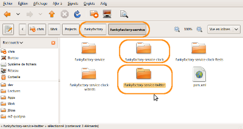
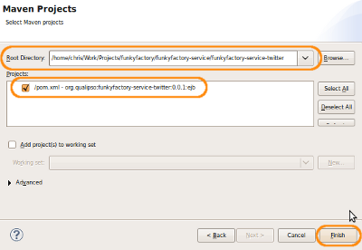
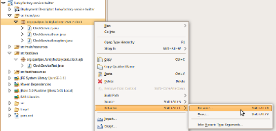
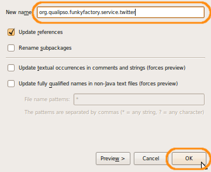
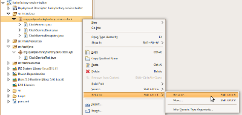
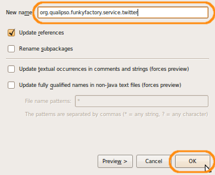
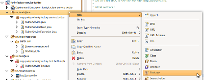
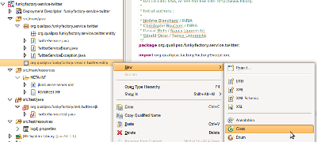
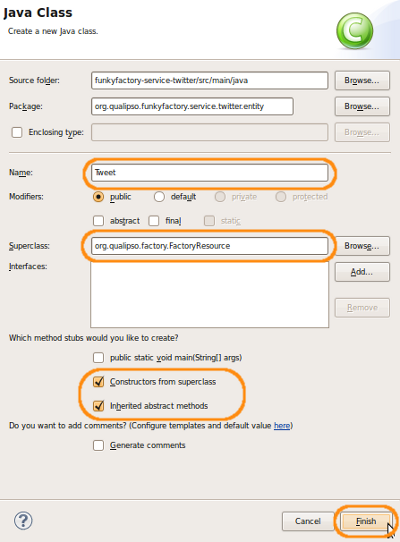

Development Tutorial
The goal of this multiparts tutorial is to make you create a fully-functionnal service for the Qualipso factory, a service that will use all the functionnalities provided by the Qualipso factory. The tutorial will address all the aspects of the factory, and you will learn how and when to use them.
The tutorial is separated in several pages pages:
- In the first page, you will create a basic service project
- In the second page, you will create the necessary test structure for your new service
- In the third page, you will define and implement the EJB part of the service
- In the fourth page, you will implements the webservice SOAP remote access to the service
- Finally, in the fifth page, you will call and use the services provided by the factory-core package, to integrate with the Qualipso Factory, and thus create a real abstract service for the factory.
You will find on the left side a menu with links to those pages. When a page is divided in several steps (like this one), you will also find a menu with those steps on the left side.
This tutorial don't have strong prerequisite about technolgies knowledge. As it will go gently about technologies (EJB, WebServices, JAAS, Eclipse, ...), you may be able to follow it without expert knowledge about them. Still, it will be easier if you already know the basic concepts of those technos. The only strong requierement is that you already have a working and configured environment, as described here. In particular, this tutorial suppose that you're using the Eclipse IDE.
Creating a new service
On this first part of the tutorial, you will learn how to create a new basic empty service (based on the clock template), so that you have the necessary structure to develop a real service.
The service that you will create will be a local twitter service (no connection to the real Twitter), allowing a user to tweet about its activites under its profile.
For this service, you will need to define several files: one for the interface of the service, one for the implementation of the service, one for the resource that is managed by the service, and one for the service-specific exception. In order to concentrate on the code itself and not on the project configuration, you will directly reuse the structure put in place by the "ClockService" template.
Checklist
Here is the checklist of everything that you will do on this level:
Step 1: Create a new project
Each service correspond to three differents projects under Eclipse:
- a project containing the service itself, and its unit tests
- a project containing the functional tests of the service
- a project containing the webservice tests of the service
Right now, you need at least one project for the service itself (you will create the functional and webservices tests afterward, once you have basic strcture for the service). You will create this project by copying and modifying the template existing project (funkyfactory-service-clock):
- Go in the funkyfactory/funkyfactory-service folder, duplicate the funkyfactory-service-clock folder, and rename it "funkyfactory-service-twitter" 
-
Go in the newly created funkyfactory-service-twitter, and edit the pom.xml file. You need to replace the following elements:
- artifactId -> funkyfactory-service-twitter
- name -> funkyfactory-service-twitter
- version -> 0.0.1
- finalName -> funkyfactory-service-twitter

- Still in the newly created funkyfactory-service-twitter, remove the "target" folder if it's present.
- In Eclipse, import the funkyfactory-service-twitter as a Maven project: 
-
Once imported, files and packages in the project still have the "Clock" in their name:
 You need to change that, using the "Refactor" function of Eclipse. Right-click on the "org.qualipso.funkyfactory.service.clock" package, in the "src/main/java" folder, and in the contextual menu, select "Refactor" -> "Rename...":

Change the name to "org.qualipso.funkyfactory.service.twitter" and click on "OK":

You need to change that, using the "Refactor" function of Eclipse. Right-click on the "org.qualipso.funkyfactory.service.clock" package, in the "src/main/java" folder, and in the contextual menu, select "Refactor" -> "Rename...":

Change the name to "org.qualipso.funkyfactory.service.twitter" and click on "OK":

-
Do the same refactoring for the following elements:
- ClockService.java -> TwitterService.java
- ClockServiceBean.java -> TwitterServiceBean.java
- ClockServiceException.java -> TwitterServiceException.java
- org.qualipso.funkyfactory.test.clock.ejb -> org.qualipso.funkyfactory.test.twitter.ejb
- ClockServiceTest.java -> TwitterServiceTest.java
-
Once this is done, the project content should look like this:


Step 2: Define the service interface
Once the project infrastructure is done, the first thing to do is to define the interface of the service you want to create. This is done in the TwitterService.java file, in src/main/java.
- Open the TwitterService.java file, in src/main/java, and start by commenting everything. You will start from scratch, keeping the old code as reference.
-
Define a new Java interface, called "TwitterService". This interface should extend the FactoryService interface, provided by the factory, in order for the service to be recognised as an abstract service.
public interface TwitterService extends FactoryService { }Later in the tutorial, you will add methods and annotations in this interface to define the funtionnalities that you want your service to provide to others. But for now, this is enough for a basic project squeleton.
Step 3: Define the service basic implementation
Once the interface is defined, you can define the implementation of the service itself. This is done in the TwitterServiceBean.java file, in src/main/java.
- Open the TwitterServiceBean.java file, in src/main/java, and again, start by commenting everything, keeping the old code as reference.
-
Define a new Java class, called "TwitterServiceBean". This class should implement the TwitterService interface that you just defined.
public class TwitterServiceBean implements TwitterService { } -
The FactoryService interface (inherited by TwitterService), is defining several methods that need to be implemented by factory abstract services:
- FactoryResource findResource(String resourcePath) throws FactoryException
- String[] getResourceTypeList()
- String getServiceName()
You will see later in the tutorial the meaning of those methods. Right now, implement empty methods, by simply returning null. Don't forget to add to each of those methods the @Override annotation that inform the Java compiler that you really mean to override the corresponding methods. The compiler is your friend, and it's always good to explicit what you mean to do:
public class TwitterServiceBean implements TwitterService { @Override public FactoryResource findResource(String resourcePath) throws FactoryException { return null; } @Override public String[] getResourceTypeList() { return null; } @Override public String getServiceName() { return null; } }
This class is still missing a lots of things (like persistence, transactions, etc.), but it is enough for now.
Step 3: Define the service resource
The goal of the TwitterService is to manage Tweet resources. Those resources will be defined in a Tweet.java file, in the package org.qualipso.funkyfactory.service.twitter.entity, in src/main/java. You will need to create this new package and this new file.
- To create a new package in src/main/java, do a right-click on src/main/java, and in the contextual menu, select "New" -> "Package": 
-
Set the name of the new package to "org.qualipso.funkyfactory.service.twitter.entity" and click on "Finish"

- To create a new file in this newly created package, do a right-click on the org.qualipso.funkyfactory.service.twitter.entity, and in the contextual menu, select "New" -> "Class": 
-
Set the name of the new class to "Tweet", its superclass to "org.qualipso.factory.FactoryResource", and check the two checkboxes "Constructors from superclass" and "Inherited abstract methods ". Then, click on "Finish":

You should get as a result the following code:
public class Tweet extends FactoryResource { public Tweet() { } @Override public FactoryResourceIdentifier getFactoryResourceIdentifier() { return null; } @Override public String getResourceName() { return null; } @Override public String getResourcePath() { return null; } } -
As you can see, the newly created class has to extends the FactoryResource class, provided by the factory, in order for the class to be recognised by the factory as a resource:
public class Tweet extends FactoryResourceFactoryResource is an abtract class, declaring three abstract methods that needs to be implemented by all resources:- FactoryResourceIdentifier getFactoryResourceIdentifier()
- String getResourceName()
- String getResourcePath()
You will see later in the tutorial the meaning of those methods. Right now, the empty version generated by Eclipse are enough:
public class Tweet extends FactoryResource { public Tweet() { } @Override public FactoryResourceIdentifier getFactoryResourceIdentifier() { return null; } @Override public String getResourceName() { return null; } @Override public String getResourcePath() { return null; } }Again, pay attention to the @Override annotation that inform the Java compiler that you really mean to override the corresponding methods.
As FactoryResource is declared as Serializable, you will get a warning, Java asking for a default serial version ID field. Suppress the warning by adding a @SuppressWarnings("serial") annotation to the class:@SuppressWarnings("serial") public class Tweet extends FactoryResource

{kind=link}
{kind=link}
{kind=link}
{kind=link}
{kind=link}
{kind=link}
{kind=link}
Again, this class is still missing a lots of things but is enough for a basic project squeleton.
Step 5: Define the service exception
Each methods that you will define in your interface should be declared as throwing an exception, specific for your service: a TwitterServiceException. This class is defined in the TwitterServiceException.java file, in src/main/java.
- Open the TwitterServiceException.java file, in src/main/java, and again, start by commenting everything. You will use it as reference.
-
Define a new Java class, called "TwitterServiceException". This class should extends the FactoryException class, provided by the factory.
public class TwitterServiceException extends FactoryException { } -
As FactoryException is declared as Serializable, you will get a warning, Java asking for a default serial version ID field. Suppress the warning by adding a @SuppressWarnings("serial") annotation to the class:
@SuppressWarnings("serial") public class TwitterServiceException extends FactoryException { } -
FactoryException declare three constructors, that overrides the equivalent constructors from the standard Exception class. The constructors can take one or two parameters: the exception message and the root exception that caused this exception. You need to overrides those constructors in your exception class:
@SuppressWarnings("serial") public class TwitterServiceException extends FactoryException { public TwitterServiceException(String message, Exception rootCause) { super(message, rootCause); } public TwitterServiceException(String message) { super(message); } public TwitterServiceException(Exception rootCause) { super(rootCause); } }
This class is almost done, but you will still need to add another annotation later in the tutorial. Right now, this is enough for a basic project squeleton.
You know have a basic service skeleton, ready to be implemented. But before launching into code writing, you need a test infrastructure, so that you can tests your code before writing it. That's the suject of the next part.